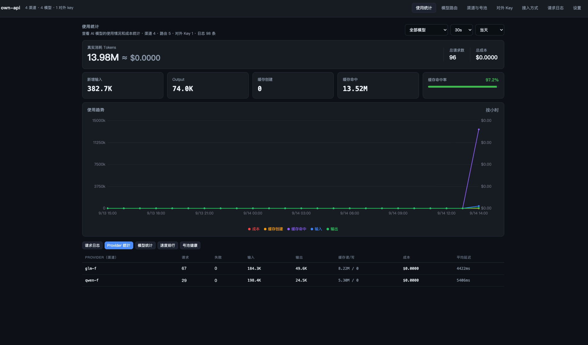

model 名即路由
对外只暴露别名。model: "claude-sonnet" 改成 "gpt-4o"，就走另一家渠道、另一把真实 key——agent 侧零其它改动。
每个模型一个 baseURL，Claude Code、Codex、IDE 插件各配一套，还老有模型又慢又抽风？ own-api 在你本机跑一个统一网关：所有 agent 只配同一个 base_url 和同一把 key—— 改一个 model 名就换一家供应商，auto 名自动绕开慢的和挂掉的模型。
145+ 项端到端测试 · 单文件存储 · 无需数据库 · 免费分发
Why own-api
公司部署了一堆模型免费给大家用——听起来很爽，配起来很痛。
每个模型一个 baseURL
Claude Code 配一套、Codex 配一套、IDE 插件再来一套，内部文档永远过时。
有的模型就是慢
排队、加载、抽风。你想绕开它，就得记住"今天谁状态好"这种玄学。
换模型 = 翻遍所有配置
每换一次模型，每个 agent 的环境变量都要改一遍，还得担心 key 贴得到处都是。
多协议互不兼容
Anthropic 原生、OpenAI 兼容、本地 Ollama……客户端和上游对不上就得中间转。
Capabilities
管理台 + 统一代理入口同进程提供：渠道号池、模型路由、自动路由、限额用量，全部可视化。
对外只暴露别名。model: "claude-sonnet" 改成 "gpt-4o"，就走另一家渠道、另一把真实 key——agent 侧零其它改动。
一个对外名聚合一组候选：按请求硬约束过滤（窗口 / tools / 流式）→ 会话粘性吃缓存 → 健康分加权随机。挂了自动换下一个，全链失败才报错。
一个渠道多把 key，加权最小负载轮询；401 / 429 / 5xx / 超时自动冷却退避、换 key 重试，到期自动回池，无需人工干预。
OpenAI ↔ Anthropic 双向：请求体、SSE 流式、tool_calls、stop_reason、usage 全映射。同协议零改写透传，不泄漏上游真实模型名。
每把对外 key 独立 RPM 与每日 token 上限，并发打不穿；逐请求记录 token、首字延迟、花费估算，按模型 / 渠道 / 天聚合出仪表盘。
双击安装、托盘常驻、开机自启；状态全存本地单文件，无数据库、不联网上报。默认只听 127.0.0.1，key 不出你的机器。
真实截图：token 消耗与缓存命中率、按小时的用量趋势、五个分析视图随切。

How it works
网关查路由表把 model 名翻译成「真实渠道 + 真实模型名 + 真实 key」，协议不同就自动互转，失败自动兜底。
YOUR AGENTS
OWN-API · 本机网关
http://127.0.0.1:8787/v1UPSTREAMS
上下文窗口、tools 支持、max_tokens、流式、缓存语义——本请求吃不消的候选先出局，不参与抽签。
多轮会话粘在同一个候选上（滑动 TTL + 迟滞带防抖），把上游 prompt 缓存吃满，多轮又快又便宜。
手动权重 × 近 10 分钟成功率加权随机。谁在抽风，谁的分自己往下掉，不用你盯。
429 / 5xx / 超时自动换下一个候选接着打；全链失败才报错，失败明细默认回显方便自诊。
Quickstart
装好自动打开管理台，令牌自动带上。之后所有 agent 只认这一个入口。
macOS 拖进应用程序，Windows 双击安装。托盘出现图标即服务已启动。
粘上游 baseURL 和 key（一行一个），点「测试连通」，上游模型一键导入路由表。
管理台「接入方式」页，按 agent 复制现成环境变量，替换即生效。
# Claude Code / Anthropic SDK：只改两行
export ANTHROPIC_BASE_URL="http://127.0.0.1:8787"
export ANTHROPIC_API_KEY="sk-lm-..."
claude
# 之后换模型 = 改一个 model 名# 任何 OpenAI 兼容客户端（Codex / SDK / curl）
export OPENAI_BASE_URL="http://127.0.0.1:8787/v1"
export OPENAI_API_KEY="sk-lm-..."
# 上游是 Anthropic 也照样接——协议自动互转// 一个名字聚合一组候选，谁健康谁上
const r = await client.chat.completions.create({
model: 'model_auto', // 硬过滤 → 粘性 → 健康分加权
messages: [{ role: 'user', content: 'hi' }],
});
// 429 / 5xx / 超时自动换候选续链，客户端无感Download
安装包在 GitHub Releases 下载（含 macOS 双架构与 Windows），数据存 ~/.own-api，卸载重装不丢。
未购买代码签名证书：macOS 首次打开请右键图标 →「打开」；Windows 点「更多信息 → 仍要运行」，属预期提示。 也可以源码运行：npm install && npm start（Node ≥ 20）。
FAQ
全部存在本机 ~/.own-api/db.json（写入即 0600 权限），不联网上报、没有任何遥测。网关默认只监听 127.0.0.1，管理台密钥默认脱敏，明文仅本机回环可见。
OpenAI 兼容（/v1/chat/completions）与 Anthropic 原生（/v1/messages）双向入口、双向互转，另兼容 legacy completions 与 embeddings。注意暂不支持 OpenAI Responses API（/v1/responses），这类客户端请切到 chat completions 模式。
不会越权：候选级 ACL 会校验这把对外 key 是否被授权使用每个候选；不在候选名单、权重为 0、健康分不达标的模型都不会接流量。全链失败会返回逐候选失败理由，绝不静默兜底到随机渠道。
每人本机装一个桌面版最省事：托盘常驻、开机自启，零依赖（无需 Docker / 数据库）。要给局域网内其它设备用，设 OWN_API_HOST=0.0.0.0 并确保处于可信网络。
管理台自带仪表盘：逐请求 token / 首字延迟 / 花费，按模型、渠道、天聚合；「速度排行」直接对比各模型的延迟表现，谁慢谁靠前；号池页实时显示每把 key 的冷却与失败退避状态，可一键恢复。